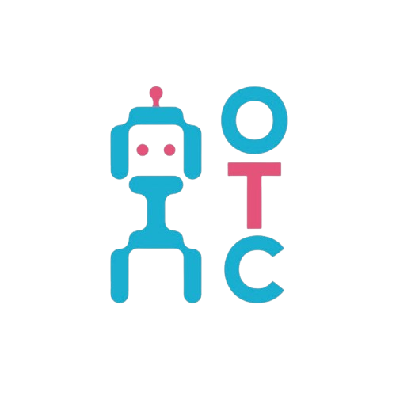

Debug the Myths, Compile the Facts
"Every dream needs a team"
Interested in robotics, AI, and cutting-edge technology?
Join our club to work on projects, attend workshops, and connect with fellow tech enthusiasts!
Meetings: Every Wednesday, 4 PM
Location: Science & Technology Building, Room 305